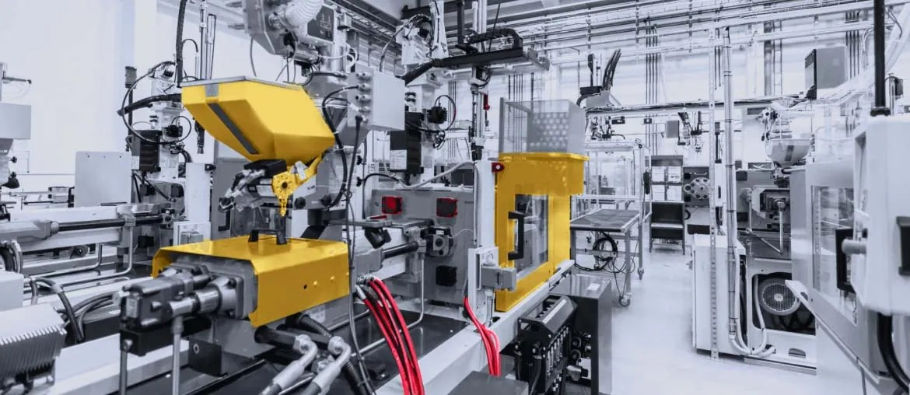

Compress the large technician image and defer non-critical scripts. Then add a simple Lighthouse CI check for ROAM and other product pages.
Prepared for Geoff Crocker and Saltworks
Scaling Data Systems for digitized industrial plants
Saw you are hiring a Full Stack Developer for Data Systems. Here is how we would help move ROAM, integrations, and AI-ready workflows faster.
Our read
Your Full Stack Developer opening points to a Data Systems team under load. Saltworks is scaling digitized modular plants, not a simple website. ROAM already promises monitoring, reports, alerts, and predictive maintenance. That means plant data, ERP and PLM data, and user workflows must stay in sync. If this work waits on one hire, engineers may keep patching tools while project delivery grows.
Where we'd start
Your job post names REST, SOAP, ERP, PLM, SQL, and AI agents. Map these systems before adding more internal tools.
What we'd do
Dedicated squad under your Data Systems owner. Six-week pilot, weekly demos, and code owned by Saltworks.
1 technical lead
2 full-stack engineers
1 data engineer
1 QA automation engineer
1
Trace data pathsTrace ROAM and DMS data paths from plant telemetry to reports, then rank the riskiest manual handoffs.
2
Build adaptersBuild secure API adapters for ERP, PLM, and operational data sources that block duplicate entry.
3
Ship one toolShip one internal workflow tool for engineering handoff, with clear ownership and audit-ready change notes.
4
Add testsAdd Playwright and API tests around role-based views, reports, alerts, and critical data sync jobs.
5
Guard AI useCreate a small AI-agent guardrail kit for internal use, with prompts, logging, and privacy checks.
Stack fit: TypeScript, Node.js, Python, PostgreSQL or T-SQL, Docker, AWS or Azure.
Who is Elinext
Elinext is a full-cycle software development company, active since 1997. We have about 700 in-house specialists, with no freelancers or subcontractors. For Saltworks, the fit is industrial software, secure data work, QA, and steady delivery under your product owner. We hold ISO 9001 and ISO 27001, useful for quality and data protection.
SiemensBroadcomVolkswagenTRUMPF
That lets us add capacity without pulling your mechanical and controls teams away from plant delivery.
Proof

Manufacturing Execution System
Elinext supported a long-running MES modernization. The system reached strong ROI and ongoing integration support.
Read case studyCRM for a manufacturing client
Elinext built CRM and ERP workflow software that improved complex process management across departments.
Read case study